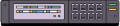
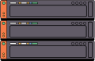
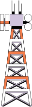
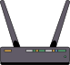
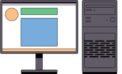
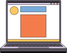
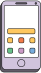

Návod
➕
Přidání zařízení
Přetáhněte obrázek z nabídky na plochu.
🔗
Vytváření cest
Táhněte cestu z jednoho zařízení na druhý.
🔀
Přesun zařízení
Držte Shift a tahejte zařízení.
❌
Smazání cesty
Klikněte na cestu.
🗑️
Smazání zařízení
Dvakrát klikněte na zařízení.
      
Reset
Export PNG